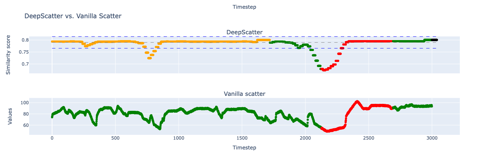

Welcome to Deepscatter’s documentation!
Deepscatter is a lightweight Python library designed to enhance and amplify the variation within time series datasets. It is particularly useful for data analysts, data scientists, and researchers looking to intensify the fluctuations, shifts, or patterns in their temporal data, making them more pronounced for analysis, visualization, or modeling.
Deepscatter intelligently modifies the values in your time series to enhance underlying trends and shifts, bringing subtle patterns to the forefront.
Accepts input as a pandas DataFrame with values and timestamps formatted as YYYY-MM-DD HH:MM:SS.ssssss, allowing easy integration with common time series workflows.
The image below shows the difference of the same time series processed with and without Deepscatter.
{kind=link}
QuickSetup
Clone the repository
cd deepscatter
pip install . -e
Dataset structure
To process your dataset with deepscatter, you have to reshape it as this one https://raw.githubusercontent.com/numenta/NAB/master/data/realKnownCause/machine_temperature_system_failure.csv
Example
import tensorflow as tf
from deepscatter.model import DeepScatter
from deepscatterz import load_data, mark_anomalies_in_timeseries, plot_shit_anomaly, plotD, train_test_split
df = load_data()
df = df[0:3000]
df = mark_anomalies_in_timeseries(df, "2013-12-10 06:25:00.000000", "2013-12-12 05:35:00.000000")
plot_shit_anomaly(df)
train, test = train_test_split(df, 1700)
dp = DeepScatter(train, test, verbose=False)
dp.train_model()
trian_res, test_res = dp.evaluate(5)
plotD(trian_res,test_res, df)
Contacts
If you are itnerested in Deepscatter or you want to report some bugs, please write to podo@di.uniroma1.it